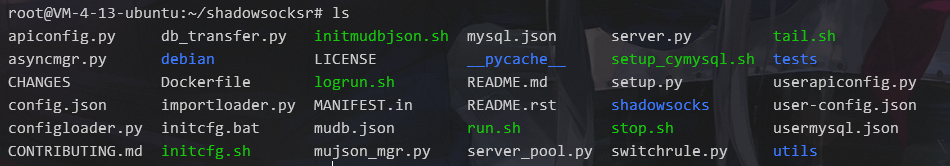
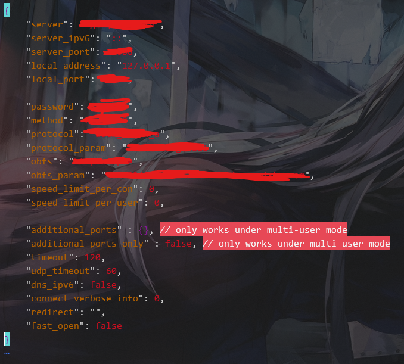
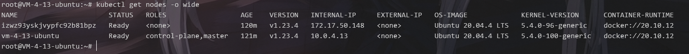
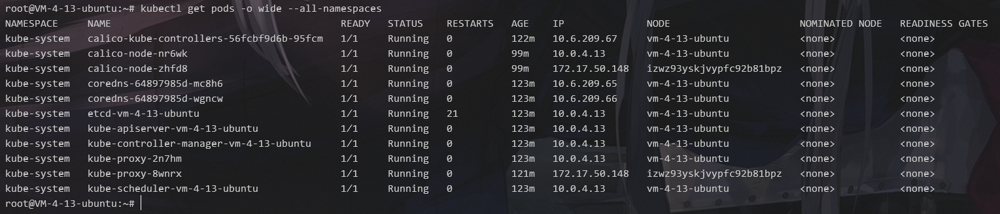
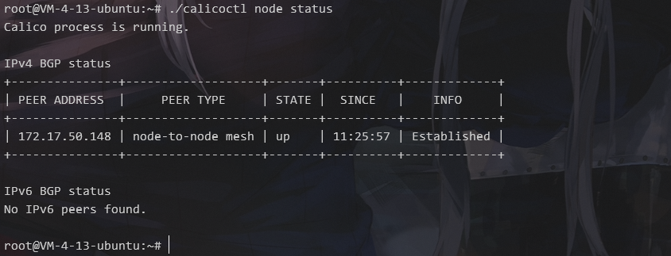

不同云服务商的云服务器搭建K8s集群
近期因为学习需要，所以整了两台云服务器给自己搭个简易k8s集群。中间因为中文互联网太乱，k8s的官方文档写的不太适合国人参考，所以中间被折磨了几天，这里做一次踩坑记录。
!!! console 作为控制节点的服务器最低配置为 2核4G
节点通信要求
k8s默认一般搭建场景都是在同一局域网网段中，但这里我们是在云服务器（不同云服务商的产品）上面搭建环境，所以我们需要进行路由设置从而让两个服务器的通信如同在同一局域网网段下一样，类似：
- 发送时：k8s节点a -> k8s节点b局域网网段ip -> k8s节点b公网ip -> k8s节点b
- k8s节点a -> k8s节点b局域网网段ip：这里目标ip为k8s节点b的局域网ip。这个局域网ip，是指k8s节点b加入k8s集群时所指定的其本地某网卡的本地ip值，一般情况下都用eth0网卡。
- k8s节点b局域网网段ip -> k8s节点b公网ip：这里就是一个简单的IP地址转换，用iptables写一个nat规则就可以，将发往k8s节点b局域网网段ip的数据包改为发往k8s节点b公网ip。
- 接收时：k8s节点b公网ip -> k8s节点b
这里需要把从k8s节点a发来的数据包的源ip从k8s节点b公网ip改回k8s节点a的局域网ip
如此一来，对于两个或多个跨云服务商的服务器，才能让其如同在同一局域网网段下一样通信，这样后续搭建k8s集群的通信基础就有了，可以避免非常多的报错。
Linux其添加NAT规则的命令：
1 | # 出站时 |
然后是k8s的网络基础配置：
1 | cat <<EOF | sudo tee /etc/modules-load.d/k8s.conf |
Linux-纯命令行版代理使用
这里因为是在云服务器上面搭环境，所以代理这个基建问题就不得不再次提了出来。如果是本地Linux虚拟机或者docker容器，其不管什么情况走本地代理就像加个参数一样简单，且几乎所有常见协议都能正常运行。
然鹅我在命令行版本的Linux系统云服务器上使用代理时，这里在网上扒了几个可以连接机场的代理之后，可以说是，每一个参考文章的结果都难用至极（ps：这里仅讨论纯命令行版本的代理工具，图形化界面的工具只看大佬们的截图应该挺好用的。）
最后在github上翻到了目前主流SSR小飞机的初代官方开源版本：https://github.com/maxsky/shadowsocksr-manyuser
这里的话，修改 config.json 为对应的机场的配置：


然后进入 shadowsocksr 文件夹，执行 local.py 文件即可开启本地代理。
然后在终端中添加环境变量：http_proxy=socks5://127.0.0.1:你上面配置文件指定的本地端口就可以正常使用代理了。
这里注意，据本人测试，在使用其开启的本地代理时，仅支持 socks5 协议，且某些情况下无法通过该代理方式进行正常通信。例如：
- 腾讯云源or阿里云源的
apt update - curl 通过其访问一些网站如 www.google.com
这里补充一个很容易搜到的点：
- apt使用socks5协议参数格式为：
-o Acquire::http::proxy="socks5h://127.0.0.1:port/"
另外尝试过后已知docker拉取镜像时无法通过该代理方式，还是需要下载国内源。
k8s组件准备
容器运行时
这里的话其实可以直接去看k8s的官方文档或者参考该文章：https://zhuanlan.zhihu.com/p/102171749，我仅做了搭建过程的简单记录。
这里我测试了三种容器运行时的安装，如要使用其他容器进行时请自行查阅资料
docker | containerd
containerd准备
1 | cat <<EOF | sudo tee /etc/modules-load.d/containerd.conf |
配置docker官方源
1 | apt update |
安装docker|containerd
1 | apt update |
配置containerd
1 | mkdir -p /etc/containerd |
重启containerd
1 | systemctl restart containerd |
检测docker安装是否正常完成
1 | docker run hello-world |
【选择】设置docker|containerd的cgroup驱动
- containerd： 在
/etc/containerd/config.toml中设置1
2
3
4[plugins."io.containerd.grpc.v1.cri".containerd.runtimes.runc]
...
[plugins."io.containerd.grpc.v1.cri".containerd.runtimes.runc.options]
SystemdCgroup = true - docker：修改或创建
/etc/docker/daemon.json1
2
3{
"exec-opts": ["native.cgroupdriver=systemd"]
}
1 | systemctl daemon-reload # 重载配置 |
查看docker的cgroup是什么：
1 | docker info | grep ‘Cgroup’ #查看 |
以上两种举例都是将其cgroup驱动设置为systemd,还有另一种对应驱动程序叫做：cgroupfs
cri-o
准备
1 | # Create the .conf file to load the modules at bootup |
设置两个环境变量，一个是 VERSION ,一个是 OS
| your OS version | $OS |
|---|---|
| Ubuntu 20.04 | xUbuntu_20.04 |
| Ubuntu 19.10 | xUbuntu_19.10 |
| Ubuntu 19.04 | xUbuntu_19.04 |
| Ubuntu 18.04 | xUbuntu_18.04 |
VERSION 则是与你的k8s版本对应的 cri-o 的版本。VERSION 的写法格式：
比如只是指定大版本如 CRI-O 1.20, VERSION=1.20 。
如果是具体到某个小版本如 version 1.20.0, VERSION=1.20:1.20.0
参考:https://github.com/cri-o/cri-o#compatibility-matrix-cri-o--kubernetes
安装cri-o
1 | cat <<EOF | sudo tee /etc/apt/sources.list.d/devel:kubic:libcontainers:stable.list |
接下来的这些命令有细节需要注意：
1 | cat <<EOF | sudo tee /etc/apt/sources.list.d/devel:kubic:libcontainers:stable:cri-o:$VERSION.list |
对于 deb http://download.opensuse.org/repositories/devel:/kubic:/libcontainers:/stable:/cri-o:/$VERSION/$OS/ /，应该可以发现，每个 : 后面都跟了一个斜杠，但我们拼接上去的VERSION如果指定了小版本的话是存在 : 的，但却没有斜杠，所以这里需要去 /etc/apt/sources.list.d/devel:kubic:libcontainers:stable:cri-o:$VERSION.list 里做修改。
另外，本人在对其安装的时候发现，我所指定的小版本却没有存在于官方源仓库，所以如果有人参考本文安装cri-o时发现：curl -L https://download.opensuse.org/repositories/devel:kubic:libcontainers:stable:cri-o:$VERSION/$OS/Release.key 报错404，是正常现象，访问 https://download.opensuse.org/repositories/devel:/kubic:/libcontainers:/stable:/cri-o:/ 找到离目标版本最接近的版本，使用该版本即可，记得 : 后面的斜杠
启动cri-o：
1 | systemctl daemon-reload |
【选择】设置cri-o的cgroup驱动
cri-o 默认使用 systemd，如果要修改为 cgroupfs，去 /etc/crio/crio.conf or /etc/crio/crio.conf.d/02-cgroup-manager.conf 中添加或修改：
1 | [crio.runtime] |
kube 套件
这里便是需要使用代理的地方，k8s需要使用三个工具，其中 kubeadm 使用谷歌自己的源仓库（本人在配置环境时此刻并未发现国内存在kubeadm的源，如果有人参考本文时发现存在相应的国内源的话反而不需要代理），所以国内云服务器必须使用机场or其他科学上网服务。
1 | apt update |
启动k8s集群
镜像准备
这里尝试了一整天的代理方式给k8s拉取官方镜像，无奈命令行版本的Linux的代理工具过于拉跨，只能下载国内源的镜像。
这里我们首先通过：kubeadm config image list 列出需要拉取的镜像版本，然后将谷歌的仓库地址：k8s.gcr.io/ 换成国内的仓库地址：registry.aliyuncs.com/google_containers/，并直接通过 docker pull 进行拉取，如下：
1 | docker pull registry.aliyuncs.com/google_containers/kube-apiserver:v1.23.4 |
之后将我们拉取的镜像名字改为谷歌源对应的名字，其实就是把仓库前缀手工改回去，类似：
1 | docker pull registry.aliyuncs.com/google_containers/kube-apiserver:v1.23.4 k8s.gcr.io/kube-apiserver:v1.23.4 |
cgroup设置
前面又说到，这个驱动有两种，启动k8s集群之前必须将 k8s 的 cgroup 驱动设置为和容器运行时一样，不然会有环境冲突导致初始化启动失败。
这里我修改了 cgroup 为 cgroupfs
- k8s配置：修改
/etc/systemd/system/kubelet.service.d/10-kubeadm.conf
1 | Environment="……(意思是省略号，前面内容不改，直接空格添加) --cgroup-driver=cgroupfs" |
然后重载重启k8s
1 | systemctl daemon-reload |
初始化启动
--control-plane-endpoint该参数可以当作是设置中心控制节点的地址，可以是ip也可以是域名；--cri-socket该参数指定k8s所用容器运行时。这里本人用的docker，对应的本地socket为/var/run/dockershim.sock--pod-network-cidr该参数指定一个网段如：100.100.100.100/16，该网段可以理解为为k8s集群指定的能直接通信不需要nat转换ip的网段。而该网段之外的其他ip如果要与k8s节点通信则需要nat转换，具体的话可以参考该文章：https://blog.csdn.net/shida_csdn/article/details/104334372
1 | kubeadm init --control-plane-endpoint ip或者域名 --cri-socket /var/run/dockershim.sock |
运行成功后有如下输出：
1 | Your Kubernetes control-plane has initialized successfully! |
这里会英语或者谷歌翻译一下就懂了，不再额外解释。
pods网络设置
前文有简单提到说k8s是在本地局域网网段下通信，而其网络通信所用的策略或者说机制或者说组件便是这部分配置。前面的路由设置也是为这里准备，节点的平常通信基本都是通过我们使用的pods组件实现。
这里我们使用 calico 组件。
配置文件准备
先从官网下载初始配置文件：https://projectcalico.docs.tigera.io/manifests/calico.yaml
然后在其中该位置 spec.template.spec.containers.env ：
1 | # The default IPv4 pool to create on startup if none exists. Pod IPs will be |
添加如下字段：
1 | - name: IP_AUTODETECTION_METHOD |
使用组件
1 | kubectl apply -f 修改后的calico.yaml的路径 |
安装calico管理工具
github下载最新版本的控制工具：https://github.com/projectcalico/calico/releases/
将其重命名为：calicoctl，并赋予执行权限
查看k8s集群状态
1 | # 查看节点状态 |


